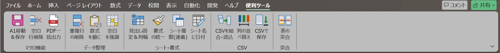

Excelの面倒な作業を、
ボタン1つで。
Excelに「便利ツール」タブを足す、無料のアドインです。CSVの結合、2つの表の突合、空白行の削除などを、ボタンで実行できます。
- 無料
- 通信は、しません
- コードは、すべて公開
- いつでも削除できます
Windows版のExcel用です(Macとブラウザ版では動きません)。導入の前に、ZIPの「許可する」のチェックが必要です。
こんな作業が、ボタンで終わります
これまで複数のCSVを、1つずつ開いて、コピーして貼る
これからCSVを結合・読込で、一度にまとめる
これまで請求書と発注書を、目で見比べる
これから表の突合で、違う行を色つきで一覧にする
これまで空白の行を、1行ずつ探して消す
これから空白行削除で、まとめて消す
これまでブック全体をPDFにする手順が、面倒
これからPDF一括出力で、1つのPDFにする
Excelには、こう表示されます
入れると、リボンに「便利ツール」というタブが増えます。

実際のExcelの画面です。見た目は、Excelのバージョンで少し変わります。
導入は、3ステップ
- ダウンロードZIPを、ダウンロードします。
- ブロックを解除ZIPを右クリック →「プロパティ」→「許可する」にチェック。
- install.vbs を実行展開して、ダブルクリックするだけです。
安心して使っていただくために
コードを、すべて公開
アドインの中身(VBAコード)を、このサイトで読めます。不安な方は、コードだけをダウンロードして、確認できます。
通信は、しません
インターネットへ通信するコードは、含まれていません。ブラウザの検索で、確かめられます。
実行の前に、確認
行の削除など、元に戻せない操作は、実行の前に確認が出ます。大事なファイルは、先にコピーを取ってください。
ご自分の作業に合わせたマクロが、必要な方へ
このサイトのアドインは、無料です。お使いの作業に合わせた、マクロの作成・修正を、ご希望の場合は、ココナラの出品ページから、ご相談ください。
運営について
Excelの作業が少しでも楽になるように、作っています。運営者の名前は、「Excel時短ラボ」としています。